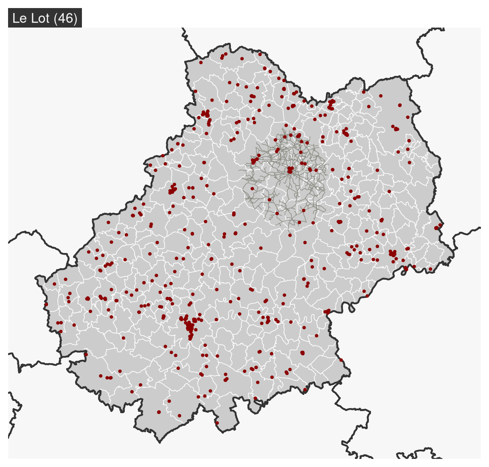
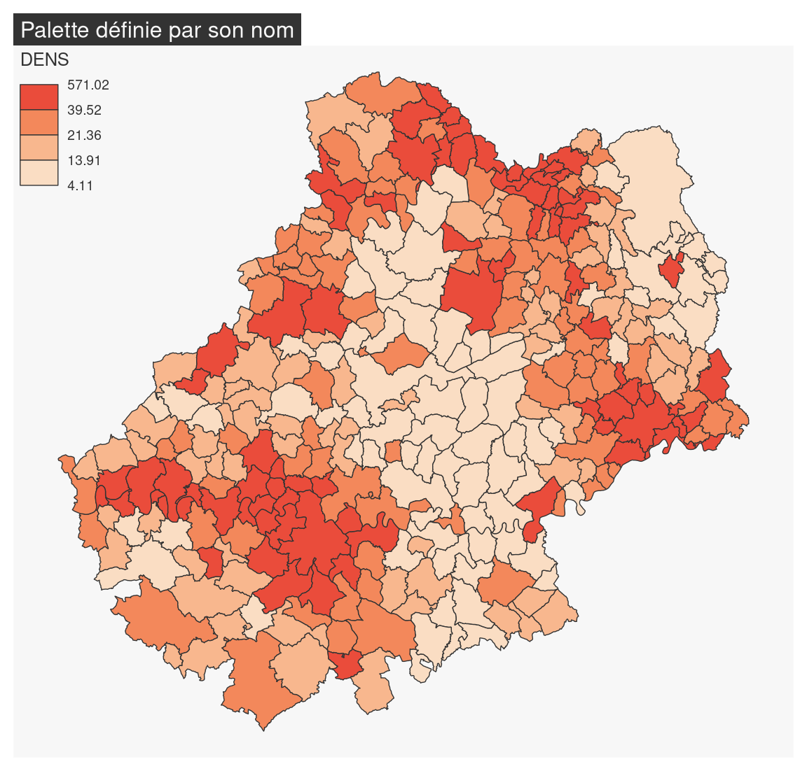
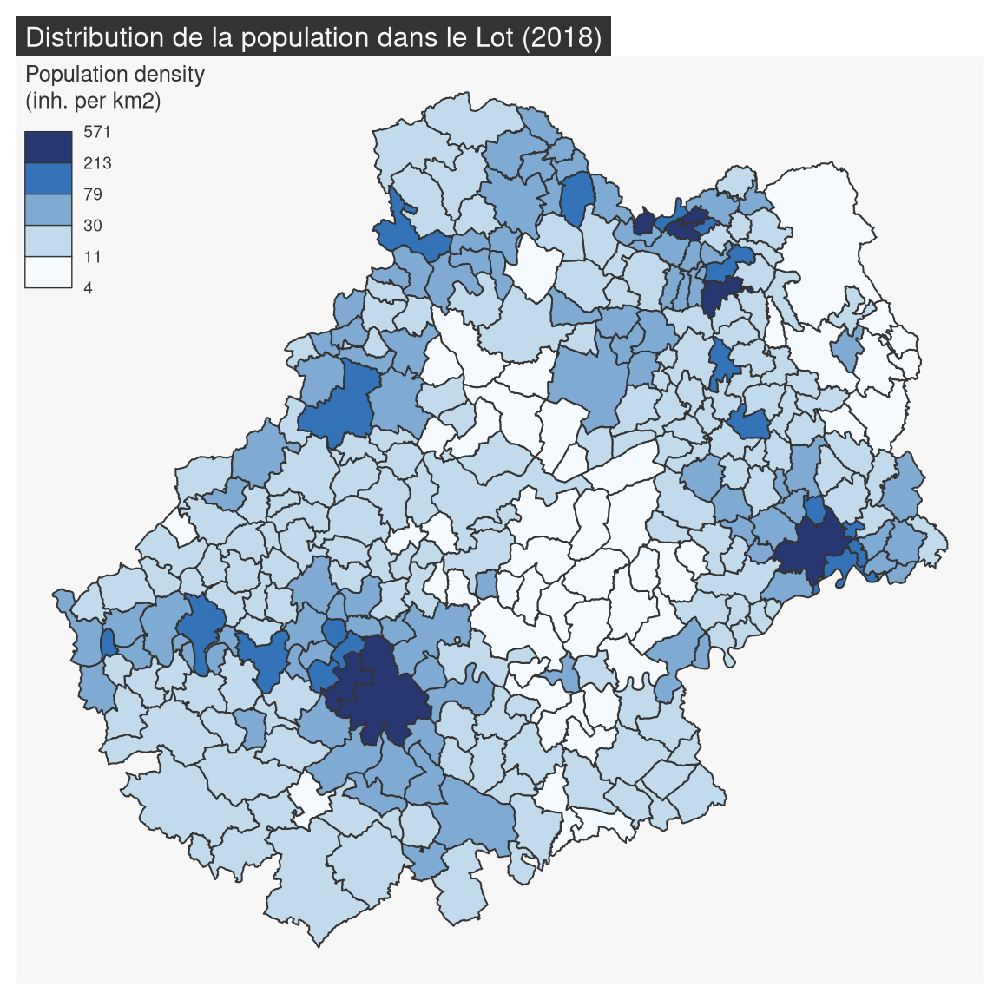

library(sf)
# import municipalities
com <- st_read("data/lot.gpkg", layer = "communes", quiet = TRUE)
# import french departements
dep <- st_read("data/lot.gpkg", layer = "departements", quiet = TRUE)
# import restaurants
resto <- st_read("data/lot.gpkg", layer = "restaurants", quiet = TRUE)
# import someroads
road <- st_read("data/lot.gpkg", layer = "routes", quiet = TRUE)3 Map Types
mf_map() is the main function of the package, it displays map layers on a georeferenced plot.
mf_map() has three main arguments:
x, an sf object;var, the name(s) of a variable(s) to map;type, the map layer type.
Many parameters are available to fine tune symbologies and legends.
3.1 Sample data set
Import map layers from the geopackage file lot.gpkg.
3.2 Geometries
mf_map(x, type = "base") displays sf objects geometries.
library(mapsf)
# polygones
mf_map(x = com, border = "white")
# Départements (polygones, fond transparent)
mf_map(x = dep, lwd = 2, col = NA, add = TRUE)
# roads (polylignes)
mf_map(x = road, lwd = .7, col = "ivory4", add = TRUE)
# Restaurants (points)
mf_map(x = resto, pch = 20, cex = .7, col = "darkred", add = TRUE)
# Ajour d'un titre
mf_title(txt = "Le Lot (46)")
3.3 Proportional Symbols
mf_map(x, var, type = "prop") displays symbols with areas proportional to a quantitative variable (stocks). The inches argument is used to customize the symbols sizes.
# Communes
mf_map(x = com)
# Symboles proportionnels
mf_map(
x = com,
var = "POPULATION",
type = "prop",
leg_title = "Population totale\n(2015)"
)
# Titre
mf_title("Distribution de la population dans le Lot")
3.4 Choropleth Map
In choropleth maps, areas are shaded according to the variation of a quantitative variable. They are used to represent ratios or indices. mf_map(x, var, type = "choro") displays choropleth maps . Arguments nbreaks, and breaks allow to customize the variable classification.
# Densité de population (hab./km2) en utilisant la fonction sf::st_area()
com$DENS <- 1e6 * com$POPULATION / as.numeric(st_area(com))
mf_map(
x = com,
var = "DENS",
type = "choro",
breaks = "quantile",
nbreaks = 6,
pal = "Dark Mint",
lwd = 1,
leg_title = "Densité de population\n(habitants par km2)",
leg_val_rnd = 0
)
mf_title("Distribution de la population dans le Lot (2018)")
3.4.1 Color palettes
Color palettes, defined with pal, can be created with mf_get_pal() or you can use palette names from hcl.pals().
mf_map(x = com, var = "DENS", type = "choro",
breaks = "quantile", nbreaks = 4,
pal = "Peach")
mf_title("Palette définie par son nom")
ma_palette <- c("#F3CAD2", "#E08BB1", "#AF4F91", "#6D1C68")
mf_map(x = com, var = "DENS", type = "choro",
breaks = "quantile", nbreaks = 4,
pal = ma_palette)
mf_title("Palette définie par un vecteur de couleurs")


3.4.2 Classifications
Before creating a choropleth map, we must first study the statistical distribution of the variable we wish to map. The mf_distr() function is used to visualise distributions.
mf_distr(com$DENS)
This distribution is very skewed to the left.
mf_get_breaks() can be used to classify continuous variables. Many classification methods are available ( “fixed”, “sd”, “equal”, “pretty”, “quantile”, “kmeans”, “hclust”, “bclust”, “fisher”, “jenks”, “dpih”, “q6”, “Q6”, geom”, “arith”, “em”, “msd” or “ckmeans”).
Here, using the ‘geom’ method is quite appropriate.
bks <- mf_get_breaks(x = com$DENS, nbreaks = 5, breaks = "geom")
bks#> [1] 4.113775 11.033758 29.594181 79.376000 212.898252 571.024813mf_map(
x = com, var = "DENS", type = "choro",
breaks = bks, pal = "Blues",
lwd = 1,
leg_title = "Population density\n(inh. per km2)",
leg_val_rnd = 0
)
mf_title("Distribution de la population dans le Lot (2018)")
3.5 Typology Map
mf_map(x, var, type = "typo") displays a typology map of a qualitative variable. val_order is used to set the modalities order in the legend.
mf_map(
x = com,
var="STATUT",
type = "typo",
pal = c("aquamarine4", "yellow3","wheat"),
lwd = .7,
leg_title = ""
)
mf_title("Statut administratif des communes")
The val_order argument is used to order the modalities in the legend.
mf_map(
x = com,
var="STATUT",
type = "typo",
pal = c("aquamarine4", "yellow3","wheat"),
val_order = c("Préfecture", "Sous-préfecture", "Commune simple"),
lwd = .7,
leg_title = ""
)
mf_title("Statut administratif des communes")
3.6 Proportional Symbols using Choropleth Coloration
mf_map(x, var, type = "prop_choro") creates a map of symbols that are proportional to values of a first variable and colored to reflect the classification of a second variable.
mf_map(x = com)
mf_map(
x = com,
var = c("POPULATION", "DENS"),
type = "prop_choro",
border = "grey50",
lwd = 1,
leg_title = c("Population", "Densité\nde population\n(en hab./km2)"),
breaks = "q6",
pal = "Magenta",
leg_val_rnd = c(0,1))
mf_title("Distribution de la population dans le Lot (2018)")3.7 Proportional Symbols using Typology Coloration
mf_map(x, var, type = "prop_typo") creates a map of symbols that are proportional to values of a first variable and colored to reflect the modalities of a second qualitative variable.
mf_map(x = com)
mf_map(
x = com,
var = c("POPULATION", "STATUT"),
type = "prop_typo",
pal = c("aquamarine4", "yellow3","wheat"),
val_order = c("Préfecture", "Sous-préfecture", "Commune simple"),
leg_pos = "topleft",
leg_title = c("Population\n(2015)",
"Statut administratif"),
)
mf_title("Distribution de la population dans le Lot (2018)")
Exercice
Import the communes layer for the Lot department from the geopackage lot.gpkg file.
Import the com.csv file.
This dataset covers the communes of the Lot department and contains several additional variables:- the number of employees (ACT).
- the number of people employed in industry (IND)
- the share of the working population in the total population (SACT)
- the share of the workforce in industry in the total workforce (SACT_IND)
Attach the dataset and the municipalities layer.
Create a map of the active population.
Which representation method should be used? What choices does this involve?Create a map of the share of the working population in the total population.
What representation method should be used? What choices does this involve?